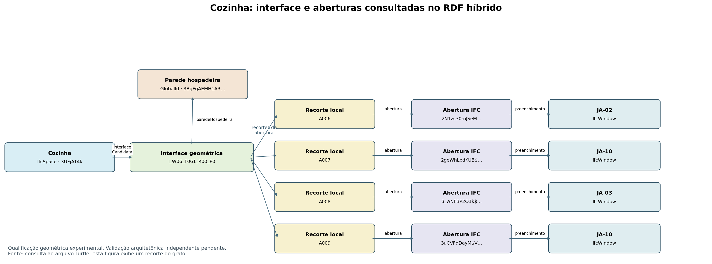

Fluxo experimental: recortes IFC2SB + evidências CGAL + adaptação de operações de Kiavarz.
O RDF contém 2559 triplas e conserva as 1.946 anteriores. A seleção de cada abertura depende do recorte da interface; a relação com a parede inteira não basta. As 24 avaliações, inclusive as negativas, permanecem registradas.
RDF completo · Consulta SPARQL · Tabela extraída do RDF

| Interface | Parede | Área bruta m² | Sondas | Sinal CGAL global |
|---|---|---|---|---|
| I_W01_F045_R15_P0 | W01 | 3.502860 | apoiada_pelas_sondas_e_raio | candidato_por_contato_ou_tolerancia |
| I_W01_F045_R21_P0 | W01 | 6.509915 | apoiada_pelas_sondas_e_raio | candidato_por_contato_ou_tolerancia |
| I_W03_F000_R08_P0 | W03 | 18.600003 | apoiada_pelas_sondas_e_raio | candidato_por_contato_ou_tolerancia |
| I_W04_F000_R13_P0 | W04 | 10.852098 | apoiada_pelas_sondas_e_raio | candidato_por_contato_ou_tolerancia |
| I_W05_F000_R14_P0 | W05 | 6.052862 | apoiada_pelas_sondas_e_raio | candidato_por_contato_ou_tolerancia |
| I_W06_F061_R00_P0 | W06 | 16.479905 | apoiada_pelas_sondas_e_raio | intersecao_volumetrica_sem_padding |
| I_W08_F068_R12_P0 | W08 | 5.820364 | apoiada_pelas_sondas_e_raio | candidato_por_contato_ou_tolerancia |
| I_W09_F061_R12_P0 | W09 | 6.726777 | apoiada_pelas_sondas_e_raio | candidato_por_contato_ou_tolerancia |
| I_W11_F000_R20_P0 | W11 | 5.587862 | apoiada_pelas_sondas_e_raio | candidato_por_contato_ou_tolerancia |
| I_W11_F002_R16_P0 | W11 | 6.052862 | apoiada_pelas_sondas_e_raio | candidato_por_contato_ou_tolerancia |
| I_W12_F000_R17_P0 | W12 | 2.635140 | apoiada_pelas_sondas_e_raio | candidato_por_contato_ou_tolerancia |
| I_W12_F001_R18_P0 | W12 | 0.465000 | apoiada_pelas_sondas_e_raio | candidato_por_contato_ou_tolerancia |
| I_W12_F002_R19_P0 | W12 | 2.170140 | apoiada_pelas_sondas_e_raio | candidato_por_contato_ou_tolerancia |
| I_W34_F060_R15_P0 | W34 | 0.527000 | apoiada_pelas_sondas_e_raio | candidato_por_contato_ou_tolerancia |
| Preenchimento | Classe IFC | Recortes na interface | Estado no critério |
|---|---|---|---|
| JA-06 | IfcWindow | 0 | sem_associacao_pelo_criterio |
| JA-09 | IfcWindow | 1 | associacao_geometrica_ao_recorte |
| PA2 | IfcDoor | 1 | associacao_geometrica_ao_recorte |
| PA1 | IfcDoor | 1 | associacao_geometrica_ao_recorte |
| PA2 | IfcDoor | 0 | sem_associacao_pelo_criterio |
| JA-06 | IfcWindow | 0 | sem_associacao_pelo_criterio |
| JA-06 | IfcWindow | 1 | associacao_geometrica_ao_recorte |
| PM2 | IfcDoor | 1 | associacao_geometrica_ao_recorte |
| JA-02 | IfcWindow | 1 | associacao_geometrica_ao_recorte |
| JA-03 | IfcWindow | 1 | associacao_geometrica_ao_recorte |
| JA-10 | IfcWindow | 1 | associacao_geometrica_ao_recorte |
| JA-10 | IfcWindow | 1 | associacao_geometrica_ao_recorte |
| PM1 | IfcDoor | 0 | sem_associacao_pelo_criterio |
| AL25 | IfcWall | 2 | associacao_geometrica_ao_recorte |
| AL22 | IfcWall | 0 | sem_associacao_pelo_criterio |
| AL16 | IfcWall | 0 | sem_associacao_pelo_criterio |
| AL17 | IfcWall | 0 | sem_associacao_pelo_criterio |
| AL19 | IfcWall | 0 | sem_associacao_pelo_criterio |
| AL18 | IfcWall | 0 | sem_associacao_pelo_criterio |
| AL15 | IfcWall | 0 | sem_associacao_pelo_criterio |
| AL23 | IfcWall | 0 | sem_associacao_pelo_criterio |
| AL24 | IfcWall | 0 | sem_associacao_pelo_criterio |
| AL20 | IfcWall | 0 | sem_associacao_pelo_criterio |
| AL21 | IfcWall | 0 | sem_associacao_pelo_criterio |
As contagens de recortes e aberturas coincidem com o piloto anterior. A contribuição é a combinação operacional e rastreável, a conferência do contorno parental e o suporte por sondas/raios; não houve demonstração de maior acurácia arquitetônica. Onze faces ficaram fora da serialização poligonal de arestas retas. Todas as 14 interfaces mantiveram a qualificação para sondas de 0,1, 1 e 2 mm. São parâmetros experimentais, não tolerâncias normativas.
O sinal CGAL pertence à parede inteira. Não significa que cada abertura esteja em conflito. Não foram certificadas novas adjacências BOT, nem concluída a arquitetura dos 41 ambientes.
Kiavarz et al. (2023), §§4.2.2–4.4 e Tabelas 4–5; IFC2SB dos autores; código de Krijnen citado no artigo. A Tabela 5 de Kiavarz contém pseudocódigo com chamadas incompatíveis com a API. As alterações seguem a documentação oficial do Shapely e estão explicitadas no registro metodológico. Não foi confirmado um repositório específico com a implementação completa de Kiavarz.